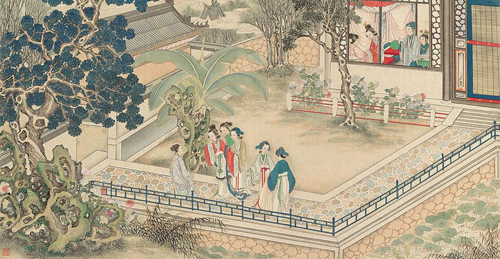

四大名著英译
Translation of Four Chinese Literature Classics
四大名著英译
Translation of Four Chinese Literature Classics
第一回(选段) 甄士隐梦幻识通灵 贾雨村风尘怀闺秀
Chapter 1 (Selection) Zhen Shi-yin makes the Stone’s acquaintance in a dream
And Jia Yu-cun finds that poverty is not incompatible
with romantic feeling

此开卷第一回也。作者自云：因曾历过一番梦幻之后，故将真事隐去，而借“通灵”之说，撰此《石头记》一书也。故曰“甄士隐”云云。
但书中所记何事何人？自又云：“今风尘碌碌，一事无成，忽念及当日所有之女子，一一细考较去，觉其行止见识皆出于我之上。何我堂堂须眉，诚不若彼裙钗哉？
实愧则有馀（yú），悔又无益之大无可如何之日也！当此，则自欲将已往所赖天恩祖德，锦衣纨袴之时，饫甘餍（yàn）肥之日，背父兄教育之恩，负师友规训之德，以至今日一技无成，
半生潦倒之罪，编述一集，以告天下人：我之罪固不免，然闺阁中本自历历有人，万不可因我之不肖，自护己短，一并使其泯灭也。虽今日之茅椽（chuán）蓬牖（yǒu），瓦灶绳床，
其晨夕风露，阶柳庭花，亦未有妨我之襟怀笔墨者。虽我未学，下笔无文，又何妨用假语村言，敷演出一段故事来，亦可使闺阁昭传，复可悦世之目，破人愁闷，不亦宜乎？”故曰“贾雨村”云云。
此回中凡用“梦”用“幻”等字，是提醒阅者眼目，亦是此书立意本旨。
以上两段无英译
列位看官：你道此书从何而来？说起根由虽近荒唐，细按则深有趣味。待在下将此来历注明，方使阅者了然不惑。
GENTLE READER,
What, you may ask, was the origin of this book?
Though the answer to this question may at first seem to border on the absurd, reflection will show that there is a good deal more in it than meets the eye.
原来女娲氏炼石补天之时，于大荒山无稽崖炼成高经十二丈，方经二十四丈顽石三万六千五百零一块。
娲皇氏只用了三万六千五百块，只单单剩了一块未用，便弃在此山青埂峰下。谁知此石自经煅炼之后，灵性已通，因见众石俱得补天，独自己无材不堪入选，遂自怨自叹，日夜悲号惭愧。
Long ago, when the goddess Nǚ-wa was repairing the sky, she melted down a great quantity of rock and,
on the Incredible Crags of the Great Fable Mountains, moulded the amalgam ( /əˈmælɡəm/ ) into thirty-six thousand, five hundred and one large building blocks,
each measuring seventy-two feet by a hundred and forty-four feet square. She used thirty-six thousand five hundred of these blocks in the course of her building operations,
leaving a single odd block unused, which lay, all on its own, at the foot of Greensickness Peak in the aforementioned mountains. Now this block of stone,
having undergone the melting and moulding of a goddess, possessed magic powers.
It could move about at will and could grow or shrink to any size it wanted. Observing that all the other blocks had been used for celestial repairs and that it was the only one to have been rejected as unworthy,
it became filled with shame and resentment and passed its days in sorrow and lamentation.
一日，正当嗟悼之际，俄见一僧一道远远而来，生得骨格不凡，丰神迥异，说说笑笑来至峰下，坐于石边高谈快论。
先是说些云山雾海神仙玄幻之事，后便说到红尘中荣华富贵；此石听了，不觉打动凡心，也想要到人间去享一享这荣华富贵，但自恨粗蠢，不得已，便口吐人言，
向那僧道说道：“大师，弟子蠢物，不能见礼了。适闻二位谈那人世间荣耀繁华，心切慕之。弟子质虽粗蠢，性却稍通；况见二师仙形道体，定非凡品，必有补天济世之材，
利物济人之德。如蒙发一点慈心，携带弟子得入红尘，在那富贵场中，温柔乡里受享几年，自当永佩洪恩，万劫不忘也。”二仙师听毕，齐憨笑道：“善哉，善哉！那红尘中有却有些乐事，
但不能永远依恃，况又有‘美中不足，好事多魔’八个字紧相连属，瞬息间则又乐极悲生，人非物换，究竟是到头一梦，万境归空，倒不如不去的好。
这石凡心已炽，那里听得进这话去，乃复苦求再四。二仙知不可强制，乃叹道：“此亦静极思动，无中生有之数也。
既如此，我们便携你去受享受享，只是到不得意时，切莫后悔。”石道：“自然，自然。”那僧又道：“若说你性灵，却又如此质蠢，并更无奇贵之处。如此也只好踮脚而已。
也罢，我如今大施佛法助你助，待劫终之日，复还本质，以了此案。你道好否？”石头听了，感谢不尽。
那僧便念咒书符，大展幻术，将一块大石登时变成一块鲜明莹洁的美玉，且又缩成扇坠大小的可佩可拿。
那僧托于掌上，笑道：“形体倒也是个宝物了！还只没有实在的好处，须得再镌上数字，使人一见便知是奇物方妙。然后携你到那昌明隆盛之邦，诗礼簪缨之族，花柳繁华地，温柔富贵乡去安身乐业。”
石头听了，喜不能禁，乃问：“不知赐了弟子那几件奇处，又不知携了弟子到何地方？望乞明示，使弟子不惑。”那僧笑道：“你且莫问，日后自然明白的。”说着，便袖了这石，同那道人飘然而去，竟不知投奔何方何舍。
One day, in the midst of its lamentings, it saw a monk and a Taoist approaching from a great distance, each of them remarkable for certain eccentricities of manner and appearance.
When they arrived at the foot of Greensickness Peak, they sat down on the ground and began to talk.
The monk, catching sight of a lustrous (/ˈlʌstrəs/ ), translucent (/trænzˈluːsnt/) stone—it was in fact the rejected building block which had now shrunk itself to the size of a fan-pendant and looked very attractive
in its new shape—took it up on the palm of his hand and addressed it with a smile: ‘Ha, I see you have magical properties! But nothing to recommend you. I shall have to cut a few words on you so that anyone seeing you
will know at once that you are something special. After that I shall take you to a certain
brilliant
successful
poetical
cultivated
aristocratic
elegant
delectable
luxurious
opulent (/ˈɒpjələnt/)
locality on a little trip.’
The stone was delighted.
‘What words will you cut? Where is this place you will take me to? I beg to be enlightened.’
‘Do not ask,’ replied the monk with a laugh. ‘You will know soon enough when the time comes.’
And with that he slipped the stone into his sleeve and set off at a great pace with the Taoist. But where they both went to I have no idea.
后来，又不知过了几世几劫，因有个空空道人访道求仙，忽从这大荒山无稽崖青埂峰下经过，忽见一大块石上字迹分明，编述历历。
Countless aeons (/ˈiːən/) went by and a certain Taoist called Vanitas in quest of the secret of immortality chanced to be passing below that same Greensickness Peak in the Incredible Crags of the Great Fable Mountains when he caught sight of a large stone standing there,
on which the characters of a long inscription were clearly discernible.
空空道人乃从头一看，原来就是无材补天，幻形入世，蒙茫茫大士渺渺真人携入红尘，历尽离合悲欢炎凉世态的一段故事。后面又有一首偈云：
无材可去补苍天，枉入红尘若许年。
此系身前身后事，倩谁记去作奇传？
诗后便是此石坠落之乡，投胎之处，亲自经历的一段陈迹故事。其中家庭闺阁琐事，以及闲情诗词倒还全备，或可适趣解闷，然朝代年纪、地舆邦国，却反失落无考。
Vanitas read the inscription through from beginning to end and learned that this was a once lifeless stone block which had been found unworthy to repair the sky, but which had magically transformed its shape and been taken down by the Buddhist mahasattva Impervioso and the Taoist illuminate Mysterioso into the world of mortals, where it had lived out the life of a man before finally attaining nirvana and returning to the other shore. The inscription named the country where it had been born, and went into considerable detail about its domestic life, youthful amours, and even the verses, mottoes and riddles it had written. All it lacked was the authentication of a dynasty and date.
On the back of the stone was inscribed the following quatrain (/ˈkwɒtreɪn/):
Found unfit to repair the azure (/ˈæʒə(r)/) sky
Long years a foolish mortal man was I.
My life in both worlds on this stone is writ:
Pray who will copy out and publish it?
空空道人遂向石头说道：“石兄，你这一段故事，据你自己说有些趣味，故编写在此，意欲问世传奇。据我看来，第一件，无朝代年纪可考；第二件，并无大贤大忠理朝廷治风俗的善政，
其中只不过几个异样女子，或情或痴，或小才微善，亦无班姑蔡女之德能。我纵抄去，恐世人不爱看呢。”
From his reading of the inscription Vanitas realized that this was a stone of some consequence. Accordingly he addressed himself to it in the following manner:
‘Brother Stone, according to what you yourself seem to imply in these verses, this story of yours contains matter of sufficient interest to merit publication and has been carved here with that end in view. But as far as I can see (a) it has no discoverable dynastic period, and (b) it contains no examples of moral grandeur among its characters—no statesmanship, no social message of any kind. All I can find in it, in fact, are a number of females, conspicuous, if at all, only for their passion or folly or for some trifling talent or insignificant virtue.
Even if I were to copy all this out, I cannot see that it would make a very remarkable book.’
石头笑答道：“我师何太痴耶！若云无朝代可考，今我师竟假借汉唐等年纪添缀，又有何难？但我想，历来野史，皆蹈一辙，莫如我这不借此套者，反倒新奇别致，不过只取其事体情理罢了，又何必拘拘于朝代年纪哉！
再者，市井俗人喜看理治之书者甚少，爱适趣闲文者特多。历来野史，或讪谤君相，或贬人妻女，奸淫凶恶，不可胜数。
‘Come, your reverence,' said the stone (for Vanitas had been correct in assuming that it could speak) ‘must you be so obtuse (/əbˈtjuːs/)? All the romances ever written have an artificial period setting—Han or Tang for the most part. In refusing to make use of that stale old convention and telling my Story of the Stone exactly as it occurred, it seems to me that, far from depriving it of anything, I have given it a freshness these other books do not have.
Your so-called “historical romances”, consisting, as they do, of scandalous anecdotes about statesmen and emperors of bygone days and scabrous
(/ˈskeɪbrəs/) attacks on the reputations of long-dead gentlewomen, contain more wickedness and immorality than I care to mention.
更有一种风月笔墨，其淫秽污臭，屠毒笔墨，坏人子弟，又不可胜数。至若佳人才子等书，则又千部共出一套，且其中终不能不涉于淫滥，以致满纸潘安、子建、西子、文君、不过作者要写出自己的那两首情诗艳赋来，故假拟出男女二人名姓，又必旁出一小人其间拨乱，亦如剧中之小丑然。且鬟婢开口即者也之乎，非文即理。故逐一看去，悉皆自相矛盾，大不近情理之话，竟不如我半世亲睹亲闻的这几个女子，虽不敢说强似前代书中所有之人，
但事迹原委，亦可以消愁破闷；也有几首歪诗熟话，可以喷饭供酒。
‘Still worse is the “erotic novel”, by whose filthy obscenities our young folk are all too easily corrupted. And the “boudoir (/ˈbuːdwɑː(r)/) romances”, those dreary stereotypes with their volume after volume all pitched on the same note and their different characters undistinguishable except by name (all those ideally beautiful young ladies and ideally eligible young bachelors)— even they seem unable to avoid descending sooner or later into indecency.
“The trouble with this last kind of romance is that it only gets written in the first place because the author requires a framework in which to show off his love-poems. He goes about constructing this framework quite mechanically, beginning with the names of his pair of young lovers and invariably adding a third character, a servant or the like, to make mischief between them, like the chou in a comedy.
‘What makes these romances even more detestable is the stilted, bombastic language— inanities dressed in pompous rhetoric, remote alike from nature and common sense and teeming with the grossest absurdities.
‘Surely my "number of females", whom I spent half a lifetime studying with my own eyes and ears, are preferable to this kind of stuff? I do not claim that they are better people than the ones who appear in books written before my time; I am only saying that the contemplation of their actions and motives may prove a more effective antidote to boredom and melancholy. And even the inelegant verses with which my story is interlarded could serve to entertain and amuse on those convivial occasions when rhymes and riddles are in demand.
至若离合悲欢，兴衰际遇，则又追踪蹑迹，不敢稍加穿凿，徒为供人之目而反失其真传者。
今之人，贫者日为衣食所累，富者又怀不足之心，纵然一时稍闲，又有贪淫恋色，好货寻愁之事，那里去有工夫看那理治之书？
‘All that my story narrates, the meetings and partings, the joys and sorrows, the ups and downs of fortune, are recorded exactly as they happened.
I have not dared to add the tiniest bit of touching-up, for fear of losing the true picture.
所以我这一段故事，也不愿世人称奇道妙，也不定要世人喜悦检读，只愿他们当那醉淫饱卧之时，或避事去愁之际，把此一玩，岂不省了些寿命筋力？就比那谋虚逐妄，却也省了口舌是非之害，腿脚奔忙之苦。
再者，亦令世人换新眼目，不比那些胡牵乱扯，忽离忽遇，满纸才人淑女、子建文君红娘小玉等通共熟套之旧稿。我师意为何如？”
‘My only wish is that men in the world below may sometimes pick up this tale when they are recovering from sleep or drunkenness, or when they wish to escape from business worries or a fit of the dumps, and in doing so find not only mental refreshment but even perhaps, if they will heed its lesson and abandon their vain and frivolous pursuits,
some small arrest in the deterioration of their vital forces. What does your reverence say to that?’
空空道人听如此说，思忖半晌，将《石头记》再检阅一遍，因见上面虽有些指奸责佞贬恶诛邪之语，亦非伤时骂世之旨；及至君仁臣良父慈子孝，凡伦常所关之处，皆是称功颂德，眷眷无穷，实非别书之可比。
虽其中大旨谈情，亦不过实录其事，又非假拟妄称，一味淫邀艳约、私订偷盟之可比。因毫不干涉时世，方从头至尾抄录回来，问世传奇。
For a long time Vanitas stood lost in thought, pondering this speech. He then subjected the Story of the stone to a careful second reading. He could see that its main theme was love; that it consisted quite simply of a true record of real events; and that it was entirely free from any tendency to deprave and corrupt.
He therefore copied it all out from beginning to end and took it back with him to look for a publisher.
从此空空道人因空见色，由色生情，传情入色，自色悟空，遂易名为情僧，改《石头记》为《情僧录》。东鲁孔梅溪则题曰《风月宝鉴》。后因曹雪芹于悼红轩中披阅十载，增删五次，纂成目录，分出章回，则题曰《金陵十二钗》。并题一绝云：
满纸荒唐言，一把辛酸泪！
都云作者痴，谁解其中味？
As a consequence of all this, Vanitas, starting off in the Void (which is Truth) came to the contemplation of Form (which is Illusion); and from Form engendered Passion; and by communicating Passion, entered again Into Form; and from Form awoke to the Void (which is Truth). He therefore changed his name from Vanitas to Brother Amor, or the Passionate Monk, (because he had approached Truth by way of Passion),
and changed the title of the book from The Story of the Stone to The Tale of Brother Amor. Old Kong Mei-xi from the homeland of Confucius called the book A Mirror for the Romantic. Wu Yu-feng called it A Dream of Golden Days. Cao Xueqin in his Nostalgia Studio worked on it for ten years, in the course of which he rewrote it no less than five times, dividing it into chapters, composing chapter headings, renaming it The Twelve Beauties of Jinling, and adding an introductory quatrain. Red Inkstone restored the original title when he recopied the book and added his second set of annotations to it.
This, then, is a true account of how The Story of the Stone came to be written.
Pages full of idle words
Penned with hot and bitter tears:
All men call the author fool;
None his secret message hears.